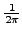

In addition to the spectral window and Sock Diagram, SIGSPEC can compute the probability density of phase angles at given frequency as a function of frequency. This is an alternative way to examine the properties of the sampling in the time domain and activated by the keyword phdist:phases in the .ini file. The resulting probability densities are normalised in a way that their mean over all phase angles is .
The number of phases to be computed is increased according to the eccentricity of the phase distribution at a given frequency.
In perfect analogy to the Sock Diagram (p. ), there are further keywords available to adjust the contents of the output file phdist.dat.
), there are further keywords available to adjust the contents of the output file phdist.dat.
Please refer to ``Sock Diagram'' (p. ) for a detailed description.
) for a detailed description.
Caution: For frequencies close to zero, tremendous output may be expected! Try to avoid the very low frequency region, if possible.
Example. The Phase Distribution Diagram in the sample project output is generated according to the following entries in the file output.ini:
phdist:cart
phdist:phases 30
phdist:fill 50
phdist:colmodel:rank
phdist:colour 223 223 223 0
phdist:colour 31 31 31 1
The resulting file output/phdist.dat is displayed in Fig.14.


Next: MultiSine Output
Up: Analysis of the Time-domain
Previous: Sock Diagram
Contents
Piet Reegen
2009-09-23